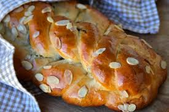
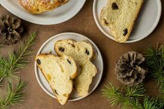

A Czech Christmas Delight
Vánočka is a sweet, braided bread traditionally baked during Christmas in the Czech Republic. For many families, it's more than just food — it's the aroma of memories, joy, and togetherness. This beautiful golden loaf represents warmth, tradition, and celebration.
“My grandmother makes Vánočka every Christmas. It’s the smell of winter mornings, the comfort of tradition, and the taste of shared joy.”


Recipe Ingredients:
- 4 cups all-purpose flour
- ½ cup sugar
- ½ cup softened butter
- 2 egg yolks
- 1 egg for egg wash
- ¾ cup lukewarm milk
- 2 tbsp fresh yeast or 7g dry yeast
- 1 tsp salt
- 1 tsp vanilla extract
- Zest of 1 lemon
- ⅔ cup raisins (optional)
- ¼ cup shaved almonds (optional)
- Powdered sugar for dusting
Instructions:
- Activate yeast in warm milk with a bit of sugar.
- Mix flour, sugar, salt, zest, vanilla, and add in yeast, yolks, butter. Knead well.
- Let dough rise until doubled (1–1.5 hrs).
- Braid into layers, stack, and let rise again.
- Brush with egg, sprinkle almonds. Bake at 350°F (180°C) for 35–40 mins.
- Cool and dust with powdered sugar before serving.